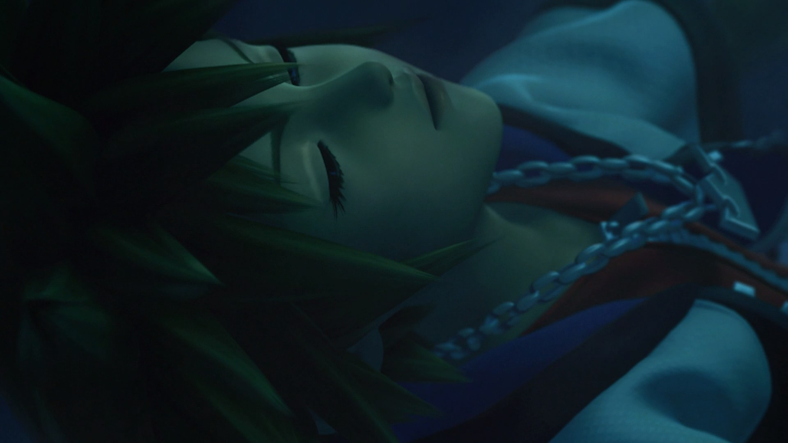

6Kingdom Hearts
Kingdom Hearts é a mistura de duas franquias que você não sabia que combinava tanto, até que alguem as colocou juntas.

6Kingdom Hearts é a mistura de duas franquias que você não sabia que combinava tanto, até que alguem as colocou juntas.